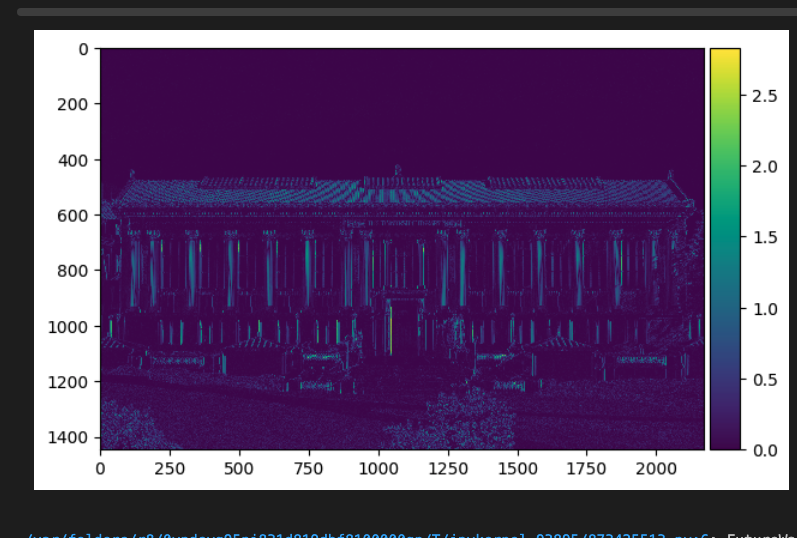
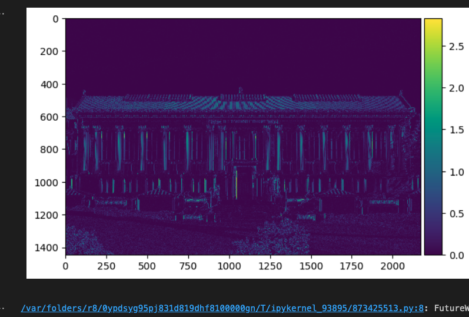

With the smoothing gaussian filter, the noise in the image is reduced. As a result, I can
apply a more precise threshold for better edge detection. The detected edges are also
more continuous and less broken up.
The sharpened image has more defined edges and details. I can more easily see the contrast in the image.
Sharpening images feels like a way to cheat extra details out of a low quality image.
Original images. We then create the fft of the images. For the falcon, I apply a low pass filter to get the low frequencies
and for the diver, I apply a high pass filter to get the high frequencies. The images below show the fft transformations and
results of these filters.
With the filtered falcon and diver images, I can then combine the images to create a hybrid image.